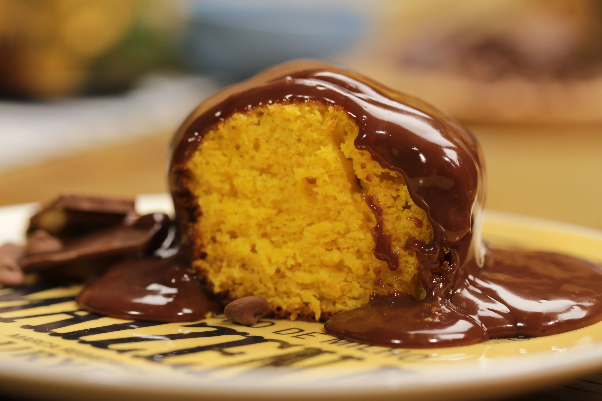

Receita de Bolo de Cenoura
Ingredientes
- 3 cenouras médias
- 4 ovos
- 1 xícara de óleo
- 2 xícaras de açúcar
- 2 xícaras de farinha de trigo
- 1 colher de sopa de fermento em pó
Modo de Preparo
- No liquidificador, bata as cenouras, os ovos e o óleo até obter uma mistura homogênea.
- Em uma tigela, misture o açúcar, a farinha de trigo e o fermento em pó.
- Adicione a mistura do liquidificador aos ingredientes secos e misture bem.
- Despeje a massa em uma forma untada e enfarinhada.
- Leve ao forno preaquecido a 180°C por aproximadamente 40 minutos.
- Retire do forno, espere esfriar e desenforme.